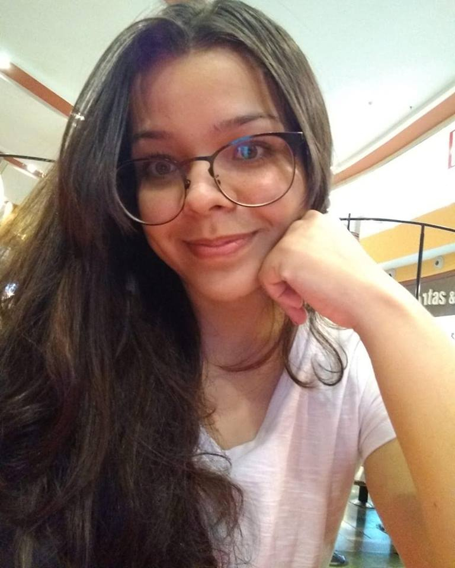

Alícia Duarte Evangelista

Rua Santo Antônio, nº 735, Santo Antônio - Manaus, AM - Brasil
Nascimento: 18 de março de 1999
Celular: +55 092 9 8467-0534
WhatsApp: +55 092 9 8467-0534
E-mail: itsaliduarte@gmail.com
Ensino Médio
Fundação Matias Machline
Manaus, AM - Brasil
2017 - 2019
Monitora Acadêmica de Física
Fundação Matias Machline
Matéria: Física
Função: Ministrar aulas de reforço para alunos do 1º ano
Mar/2017 - Dez/2017
Medalhas
Prata na 2ª Olimpíada Sesi de Matemática - 2018
Prata Regional na Olimpíada Internacional de Matemática sem Fronteiras - 2018
Bronze Nacional na Olimpíada Internacional de Matemática sem Fronteiras - 2018
Bronze na Olimpíada Brasileira de Astronomia e Astronáutica - 2019
Projeto Blog Moetá da Literatura
Fundação Matias Machline
Matéria: Língua Portuguesa
Função: Líder coordenadora na construção dos cronogramas relacionados ao projeto
Mar/2018 - Nov/2018
Atendente de telemarketing - FAMEPI
Descrição de Atividade: Atendimento ao cliente e divulgação da empresa.
Período: Jan/2020 - Nov/2020
Microempreendedorismo
Descrição de Atividade: No contexto da atividade, montei uma miniempresa de confeitaria, na qual
preparava, confeitava e vendia/revendia bolos e brigadeiros.
Período: Fev/2016 - Nov/2016
Português (nativo)
Inglês (básico)
Espanhol (básico)
Informática (Fundação Matias Machline)
Curso de Empreendedorismo (EZAPE)
Palestrante em workshop de comunicação e ideias;
Projeto Sanzen (2019), aplicativo desenvolvido para mobile em Android Studio em trio, atuando
como designer e analista de documentos. O objetivo do aplicativo é contribuir para o controle emocional.
Qualidade em organização, comunicação, autodidatismo e movivação;
Interesse por trabalhos em equipe.